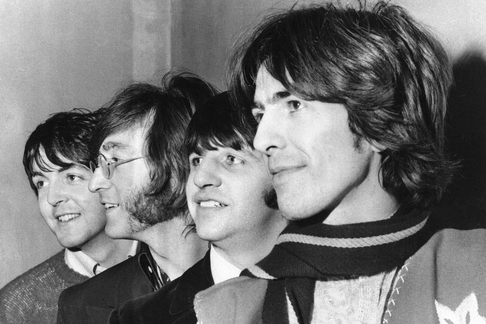
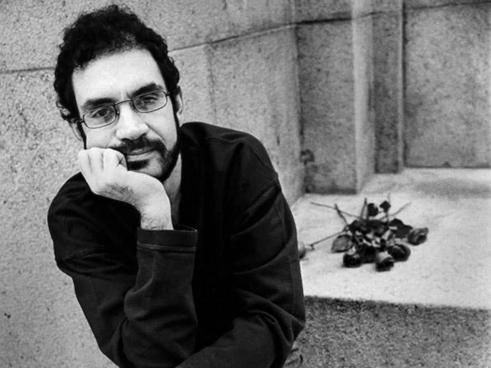

The Beatles
Em 1960 na cidade de Liverpool, surgia uma das melhores bandas de rock internacional de todos os tempos:
The Beatles, formada por John Lennon, Paul McCartney, George Harrison e Ringo Starr.

O primeiro sucesso estourou em 1962 após o lançamento do álbum Please Please Me, com a faixa “Love Me Do”.
Em 1964, o álbum A Hard Day’s Night e o hit com o mesmo nome lançaram o quarteto ao status de estrelas internacionais.
Os álbuns seguintes, Rubber Soul (1965), Help (1965), Revolver (1966) e Sgt Pepper’s Lonely Hearts Club Band (1967), apresentaram ao mundo grandes obras da banda.
E nos anos seguintes eles produziram seus discos de maior sucesso comercial, The Beatles em 1968, Yellow Submarine em 1969,
Abbey Road também em 1969 e Let It Be em 1970.
Algumas das maiores músicas de sucessos da banda foram “Yesterday”, “Help”, “Lucy In The Sky With Diamonds”, “Yellow Submarine”, “Let It Be” e “Come Together”.
Legião Urbana
Quem nunca ouviu uma composição do inesquecível Renato Russo na banda Legião Urbana?
Mesmo quem não viveu nos anos 80, período de maior sucesso do grupo, já se deparou com hits como “Pais e Filhos”,
“Eduardo e Mônica” e o clássico “Faroeste Caboclo”, com seus incríveis 9 minutos de duração.
A história das canções serviu, inclusive, como inspiração para o universo cinematográfico. Faroeste Caboclo virou filme em 2013,
contando a trajetória de João de Santo Cristo também nas telinhas.
Já a produção sobre o amor de Eduardo e Mônica foi lançada como filme recentemente, no início de 2022.
Em sua formação mais conhecida, Legião Urbana contou com Renato Russo, Marcelo Bonfá, Dado Villa-Lobos e Renato Rocha.
Juntos, eles lançaram álbuns que marcaram a história musical brasileira, como Legião Urbana, Que País é Este e As Quatro Estações.
O grupo se desfez após a morte de Renato Russo, em 1996, mas nunca perdeu espaço entre as maiores bandas de rock nacional de todos os tempos
